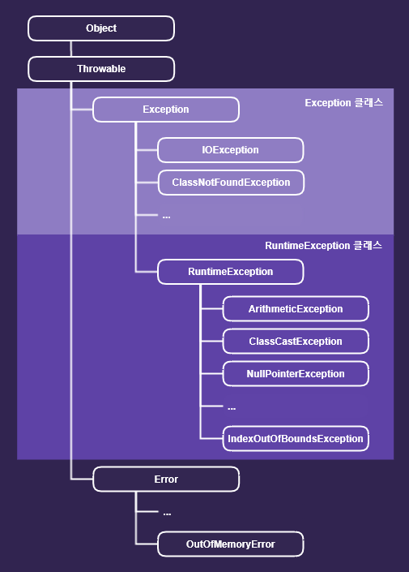

프로그램 오류
프로그램이 실행 중 어떤 원인에 의해서 오작동을 하거나 비정상적으로 종료되는 경우가 있습니다. 이러한 결과를 초래하는 원인을 프로그램 에러 또는 오류라고 합니다.
자바 프로그램을 작성할 때
자바 문법에 맞지 않게 코드를 작성하고 컴파일하려고 하면, 자바 컴파일러는
문법 오류(syntax error) 를 발생시킵니다. 또한, 자바 문법에는 맞게 작성되었다 하더라도 프로그램이 실행되면서 예상하지 못한 오류가 발생할 수 있습니다. 이렇게 컴퓨터 시스템이 동작하는
도중에 예상하지 못한 사태가 발생하여
실행 중인 프로그램이 영향을 받는 것을 오류(error)와 예외(exception) 두 가지로 구분할 수 있습니다.
에러 또는 오류가 발생하면, 프로그램의 비정상적인 종료를 막을 방법이 없지만, 예외는 발생하더라도 프로그래머가 이에 대한 적절한 코드를 미리 작성해 놓음으로써 프로그램의 비정상적인 종료를 막을 수 있습니다.
이러한 방법을
예외 처리(Exception handling)를 한다고 합니다.
- 오류(Error) : 프로그램 코드에 의해서 수습될 수 없는 심각한 오류로 실행 중인 프로그램을 종료시킵니다.
- 예외(Exception) : 오류와 마찬가지로 실행 중인 프로그램을 비정상적으로 종료시키지만, 발생할 수 있는 상황을 미리 예측하여 프로그램 코드에 의해서 수습될 수 있는 다소 미약한 오류
오류는 발생시점에 따라 다음과 같이 나눌 수 있습니다.
- 컴파일 에러 : 컴파일 시에 발생하는 에러
- 런타임 에러 : 실행 시에 발생하는 에러
- 논리적 에러 : 실행은 되지만, 의도와 다르게 동작 하는 것
예외 클래스 계층도

자바에서는 실행 시 발생할 수 있는 오류(Exception과 Error)를 클래스로 정의하였습니다.
모든 클래스의 조상은 Object이므로 Exception클래스와 Error클래스 역시 Object클래스의 자손들입니다. Object를 제외한 모든
예외 최고 조상은 Exception클래스입니다.
예외 클래스들은 두 그룹으로 나눠질 수 있습니다.
- Exception 클래스들 : 사용자의 실수와 같은 외적인 요인에 의해 발생하는 예외 (예외처리를 확인하는 checked예외)
- RuntimeException 클래스들 : 프로그래머의 실수로 발생하는 예외 (예외처리를 확인하지 않는 unchecked예외)